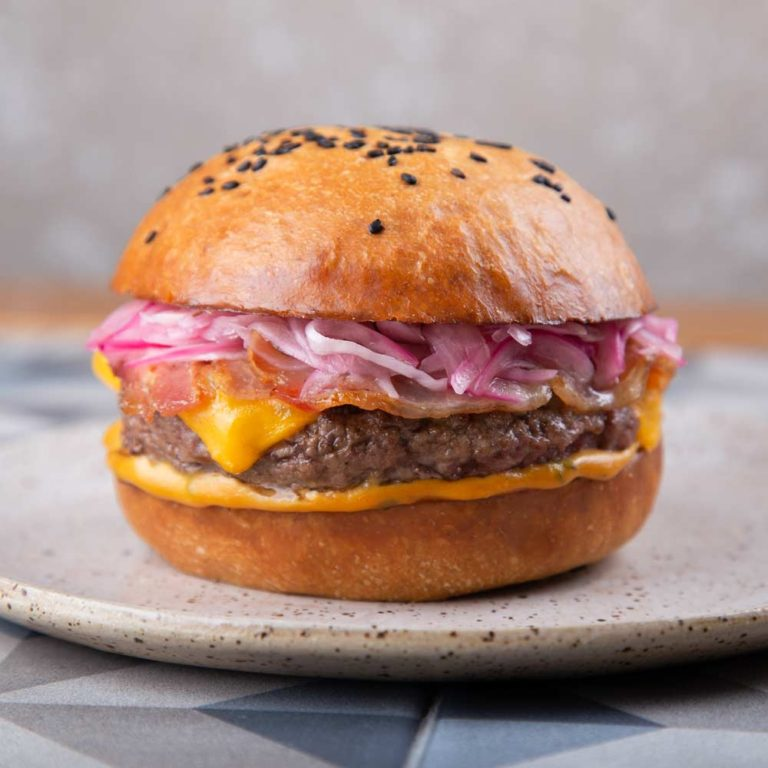

·Nuestra Historia·
Desde el 2015 y con mucho esfuerzo, entrega y amor La Birrería ha hecho realidad uno de nuestros sueños: crear un espacio con gran oferta para todos en cualquier ocasión, todos los días del año. Nos convertimos en un restaurante referente y marcador de tendencias que ha cristalizado la visión de una familia de reinventar el concepto tradicional de un restaurante hasta convertirlo en un creador de experiencias.
Cuidamos siempre cada detalle en la preparación de nuestros alimentos, ponemos especial atención en la calidad de nuestros ingredientes, te garantizamos que utilizamos productos debidamente seleccionados para así poder ensamblar platos con la dosis justa de especias, de modo que puedas percibir la autenticidad y calidad de nuestras creaciones. Nuestro menú es principalmente cocina al carbón que se concentra en cortes Angus pero nos inspira mucho la gastronomía europea, mexicana y americana que hemos incluido en platos seleccionados para su disfrute. Así mismo, nuestros cocteles y bebidas espirituosas concebidas para darle un pequeño gusto al alma se basan exclusivamente en espíritus premium.
La principal experiencia que ofrecemos es el placer de comer, disfrutar de platos deliciosos, ingredientes de alta calidad, con preparaciones sencillas que potencian su sabor real, junto a quien quieres.
Las celebraciones son una experiencia frecuente en nuestro restaurante, cócteles originales para disfrutar con espirituosos premium, ingredientes de estación y técnicas modernas. Somos amantes del buen vino por lo que contamos con una selección de vinos europeos principalmente y más de 80 variedades de cervezas (nacionales, importadas y artesanales) para acompañar todo nuestro menú y completar tu experiencia gastronómica.
Cantar, escuchar y vibrar con shows en vivo es la experiencia que cierra nuestro concepto porque es esta parte que nos conecta con ustedes a través de la música, que supera generaciones y por un momento en la semana nos libera de la rutina. Contamos con la mejor cover band de la ciudad, equipos de audio, sonido y video, para que tu experiencia Live Sessions sea de la más alta calidad.